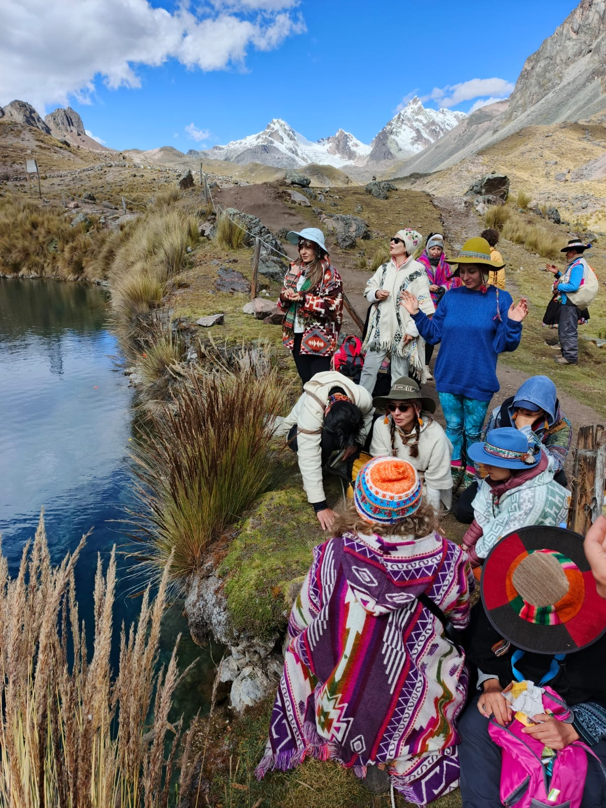
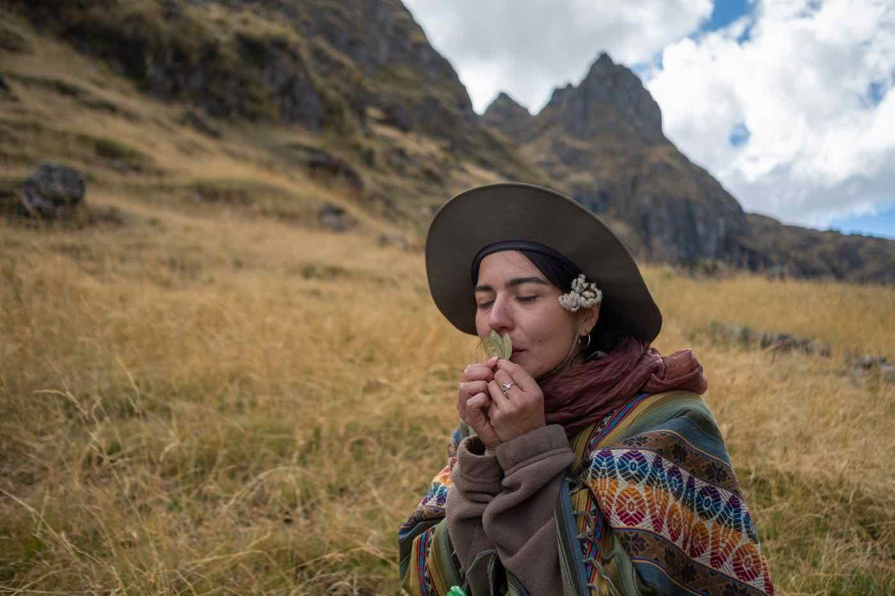

A few moments from the road
 Nile River · Egypt
Nile River · Egypt
 Pisac · Peru
Pisac · Peru
 Water Purification · Bali
Water Purification · Bali
 Fire Puja · India
Fire Puja · India
 Olive Harvest · Türkiye
Olive Harvest · Türkiye
About
Closer to the land, to each other, and to yourself.
How We Walk
Every place carries its own intelligence: a way of knowing that existed long before language.
The desert teaches patience. The mountain teaches surrender. The olive grove reminds us that what grows slowly tends to give more.
We come to embody what is here, as it is: through the body, through attention, through being in relationship with the land.
In the Andean tradition, this is called munay: a quality of love that moves without force, without needing to arrive anywhere.
And woven through all of it: dancing, drumming, waterfalls you leap into without a second thought, and roads that take you somewhere you didn't expect. The body wakes up. Something in you remembers how to be fully alive, how to celebrate, how to move with all of yourself through the world.
And slowly, what was always here begins to be felt again.

Ausangate · PeruA few moments from the road
Nile River · Egypt
Pisac · Peru
Water Purification · Bali
Fire Puja · India
Olive Harvest · Türkiye

How this began
Founder · Guide · Facilitator
Hello, I'm Merve.
I work with movement, presence, and time spent close to the land, often alongside a small circle of collaborators.
Wisdom Walk began with a simple question: what kind of journey do I actually want to be part of?
Something slower, with space for silence and a bit more attention to what's actually there.
Over time, my path has taken me through different places and ways of working, from time spent in the Andes and India to quieter moments in monasteries, deserts, and shared practices with teachers and communities along the way.
I've been returning to Ayvalık for over a decade, working with olive trees and staying in relationship with the land over time.
These experiences weren't something to collect, but to stay with. They've shaped the way I listen, the way I work, and what I'm able to hold.
For many years now, I've worked as a movement and meditation facilitator, guiding practices rooted in the body, breath, and presence. The journeys I hold weave together the inner and outer landscape, what is happening around us and what is moving within.
Over time, I've come to see that the most valuable thing I can offer isn't something I explain.
It's presence.
The pace, the attention, and the willingness to stay with something a little longer than usual.
Each journey is intentionally small, so there's space to really meet each other and for something to shift.
That intimacy isn't a detail. It's the point.
✦ How we walk
We come to each land as students. In the mountains of Peru, meaning doesn't arrive right away. What's asked is simple: a willingness to be taught.
Mountains, ancient cities, forests, deserts: each arrives with its own teaching. We follow where it leads.
Movement, breath, stillness: not as techniques, but as languages the body already knows. Safety comes first. Depth follows.
We are already in the unknown. Each place reminds us of that, in its own way.
We become mirrors and guides for one another. A kind of strength that comes from moving together, and from celebrating together, with full joy.
Questions
If your question isn't here, write to us. We read every message.
✦ Applications
Tell us what’s drawing you here.
We’ll take it from there.
We typically respond within 2–3 days.
All journeys are application only.
We'll schedule a short video call to get to know each other.
Are you a facilitator, a teacher, or a group with a shared intention? We can design a walk around your community: same lands, same depth, your own rhythm. A bespoke journey, held with care.
Let's talk →